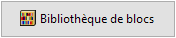
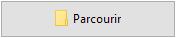
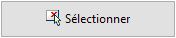

File
Où puis-je trouver cette commande ?
laFile
Icône :

(clic gauche)
Les files permettent de créer des éléments de Lands ou d'autres objets le long d'une courbe.
Insérer une file :
Lorsque vous lancez la commande laFile, la boîte de dialogue d'insertion d'une file apparaît. Cette boîte de dialogue présente les options de base de la file dans deux onglets :
- Exemple : paramètres des éléments de la file.
- File : paramètres de la file.
Étapes :
- Sélectionnez les éléments de la file dans l'onglet Exemple. Ces éléments peuvent être définis de trois façons différentes :
-  Un bloc dans la bibliothèque de blocs.
-  Un fichier de votre PC.
-  Un objet existant dans le modèle.
Après la sélection, un aperçu de l'objet apparaîtra dans la boîte de dialogue.
- Sélectionnez les Paramètres de la file dans l'onglet File. Cliquez sur Accepter pour fermer la boîte de dialogue.
- Sélectionnez une courbe du modèle pour définir la file ou sélectionnez une option dans la ligne de commande.
- Polyligne : la file sera créée comme si vous dessiniez une polyligne.
- Spline : la file sera créée comme si vous dessiniez une spline.
- Cercle : la file sera créée comme si vous dessiniez un cercle. Le premier clic définit le centre du cercle et le deuxième indique le rayon.
- Arc : la file sera créée comme si vous dessiniez un arc. Le premier clic définit le point d'insertion. Le deuxième indique le point central de l'arc. Le troisième et le dernier déterminent les extrémités de l'arc.
- Rectangle : la file sera créée comme si vous dessiniez un rectangle. Le premier clic définit un sommet du rectangle et le deuxième le sommet opposé.
- Appuyez sur Entrée, Échap ou cliquez avec le bouton droit pour terminer la commande.
Les paramètres de la file peuvent être modifiés lors de l'insertion et après, à partir du panneau d'édition de Lands Design, dans la section Propriétés, sous l'onglet File.

Boîte de dialogue d'insertion d'une file.
Remarque : La file peut contenir n'importe quel élément sauf une plante. Pour créer des files de plantes, utilisez la commande laFilePlantes.
Points de contrôle 
Les files ont les mêmes points de contrôle que les courbes à partir desquelles elles ont été créées.
Elles disposent d'une flèche de contrôle du déplacement afin de déplacer tout l'objet dans son ensemble.
Les points de contrôle des files sont automatiquement activés lorsqu'une file est sélectionnée. Pour activer les points de contrôle sur une ou plusieurs files, sélectionnez-les et lancez la commande ActiverPoints (ou appuyez sur F10). Pour désactiver les points de contrôle, appuyez sur Échap ou lancez la commande DésactiverPoints.
Paramètres et options d'insertion
Les paramètres et options d'insertion des files se trouvent dans différents onglets de plusieurs boîtes de dialogue.
Général
Attributs généraux pour la file : Nom, Couleur, Calque, Code et Mots clé.
Exemple
Paramètres des éléments de la file :
- Exemple : éléments composant la file. Vous pouvez le choisir dans la bibliothèque de blocs, dans un dossier de votre ordinateur ou en sélectionnant un objet dans le modèle.
- Rotation : angle de rotation de chaque élément à partir de son propre point d'insertion.
- Orientation : quatre options sont disponibles pour orienter les éléments de la file par rapport à la courbe définissant la file.
- Tangent à l'axe
- Perpendiculaire à l'axe
- Vers un point : cliquez sur le bouton Indiquer le point pour choisir un point directement dans le modèle
- Angle donné
La case Inverser fait tourner l'orientation de chaque élément de 180 degrés. Cette option est uniquement disponible lorsque les options d'orientation Tangent à l'axe et Perpendiculaire à l'axe sont sélectionnées.
Lorsque les files sont composées de différents éléments, les paramètres de chacun sont disponibles après avoir sélectionné les éléments désirés dans la Liste de sélections d'objets du Panneau d'édition de Lands.
File
Deux options sont disponibles pour distribuer les éléments dans des files :
- Nombre d'unités : définit le nombre total d'unités le long de la courbe de l'axe de la file.
- Séparation : place les éléments de file à une certaine distance entre eux, en respectant un alignement sur la courbe de l'axe (au début, centré ou à la fin).
- Distance de l'axe : déplace la position des éléments par rapport à la courbe.
Les files peuvent être composées de plusieurs exemples d'éléments :
- Nb d'éléments : tapez le nombre d'exemples différents. La liste des différents éléments apparaîtra dans la Liste de sélection d'objets du Panneau d'édition de Lands, d'où vous pouvez les sélectionner pour modifier leurs paramètres.
- Distribution : options pour distribuer les éléments d'une file lorsqu'il y a plusieurs types d'éléments.
Unités insérées : affiche le nombre exact d'unités dans la file.
Matériau
Cet onglet permet de changer l'image de texture assignée à cet élément et de définir la taille et la réflectivité de l'image.
Options d'édition
Options d'édition de la file, disponibles dans la zone d'édition du panneau d'édition :
Affichage des files :
Les files peuvent être affichées simultanément en 2D et 3D dans le dessin, en fonction de l'entité sélectionnée. Si l'élément de la file est choisi dans la bibliothèque de blocs, il possède un affichage 2D et un 3D. Si l'élément est choisi dans le modèle, il n'aura qu'un affichage 3D.